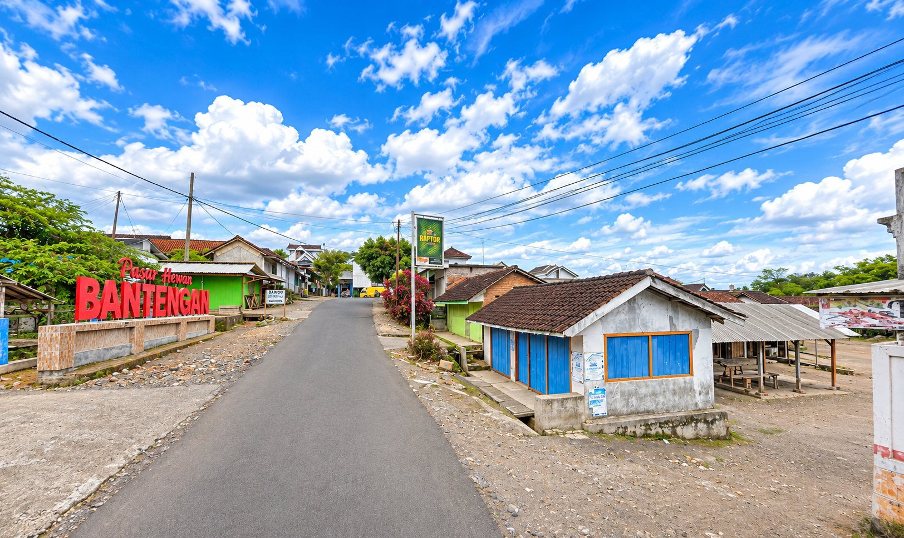

JARINGAN INTERNETNormal
PEMERINTAH KABUPATEN BLITAR
REPUBLIK MELON
PAPAN INFORMASI DIGITAL · KECAMATAN WATES
SENIN · PON
15 November 2026
00:00:00
STATUS KETERSEDIAAN KTP-EL
Menunggu Pengiriman
100 KEPING
SISTEM SIAKNormal
INFO PENTING
Pencetakan di Kecamatan Wates diperuntukkan bagi KTP-EL pemula. Pengurusan KTP hilang atau rusak dilayani di Dispendukcapil Kabupaten Blitar.
AGENDA PASAR WILAYAH KECAMATAN WATES
INFO PASARAN

